Metamorphic Textures
Created Tuesday 17 December 2019
@GEOLOGY @MRF @metamorphic @YEAR1
Crystal Size
- @Phaneritic (crystals can be seen with the naked eye) ≠ @Aphanitic
Types of fabric
- Primary: original formation. Preferred orientations
- Shape: Preferred orientation of inequant minerals
- Crystallographic preferred orientation: PO of crystal axis
- S- @fabric: Cleavage and foliation
- L (linear) Fabric: Minerals have been stretched out and recrystalised
- Penetrative: fabric consistent through rock (depends on scale)
- Magnetic: Oritentation of magnetic particles
Minerals
@Idioblastic = @euhedral
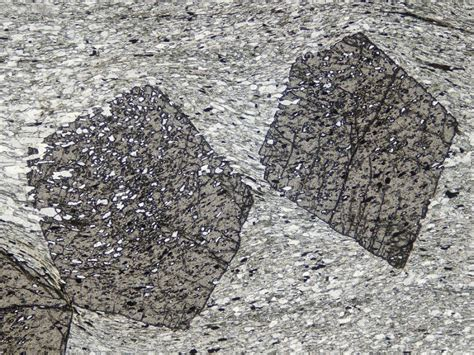
@Xenoblastic = shape based on the space avaliable
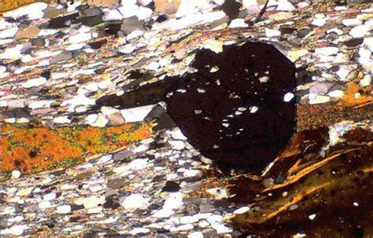
@hybidioblastic = can see outline of where it was idioblastic
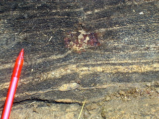
Deformation
@Schistocity = @foliation
σ1 = dominant compression
σ3 = dominant tension (negative compression)
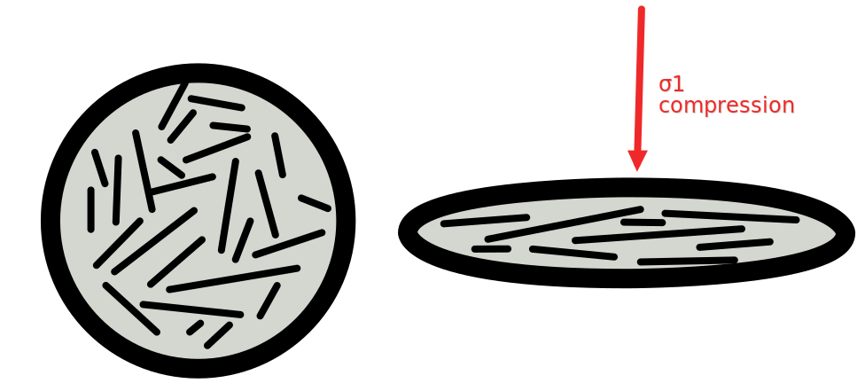Deformation causes randomly orientated crystals to align 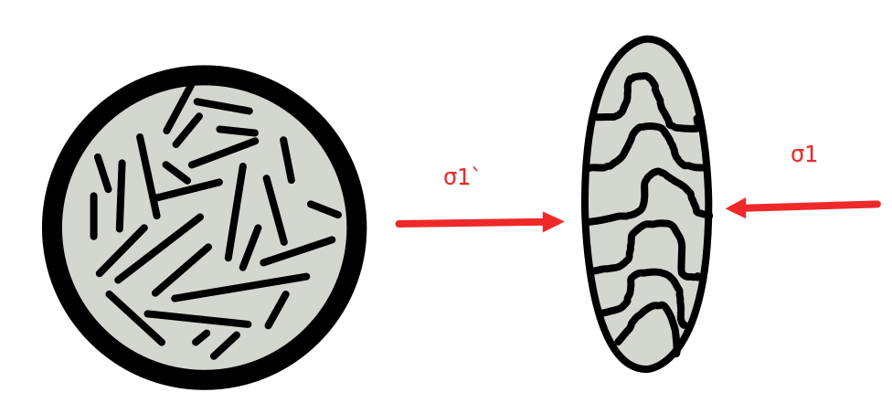
Extention forms @boudinage:
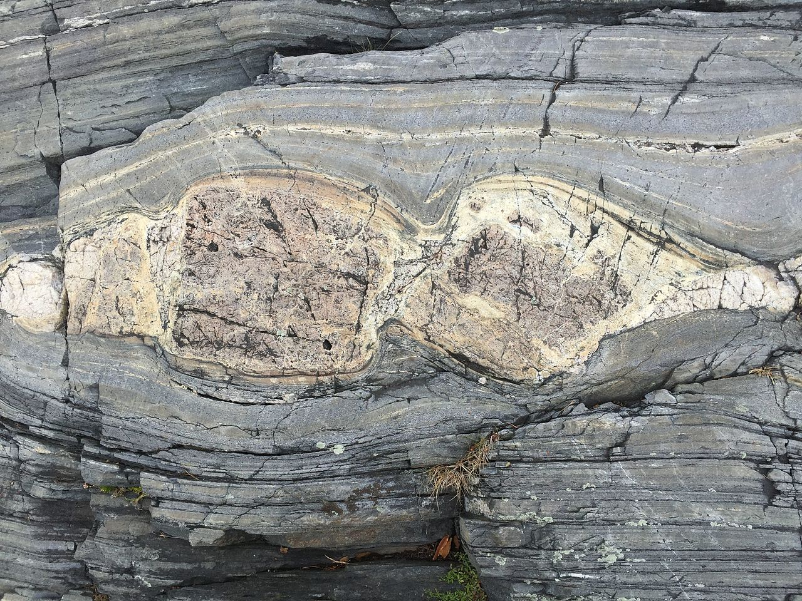
@boudins
Tension: being pulled apart → fractures
Sheer strain along a plane
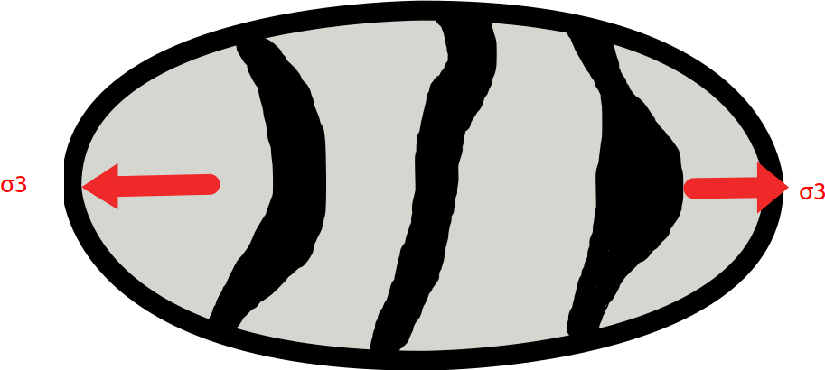
@lineation
Shearing and deformation:
Deformation at an angle to σ1:
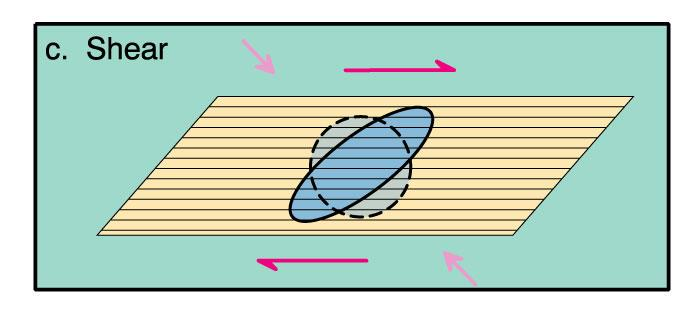
Low temperatures → rock mechanically fragmented as the fragments slide and rotate → @Cataclastic_flow
→ Fault @Breccia
→ @mylonite
Mineral differentiation
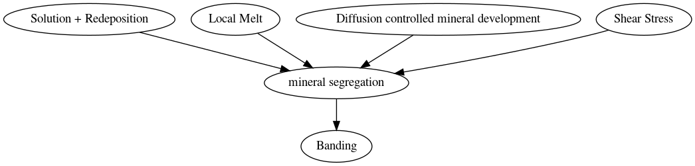
Pressure Solution:
@pressure_solution
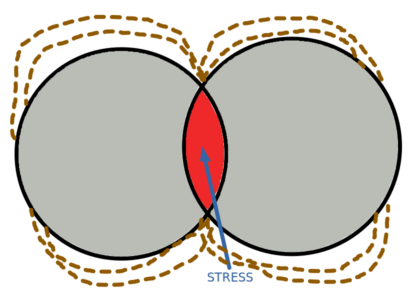
Stress redistributes minerals
Minerals deposited (brown) where there is less strain
Schistocity
@Schistocity
Adding 'shist' to a name means it has been deformed:
@Greenshist = deformed Green @Chlorite
Plastic intercrystalline deformation
@Plastic_Intercrystalline_deformation
Disolcations in the crystal lattice slip along the lattice in a @dislocation_glide motion needs very little strain to move.
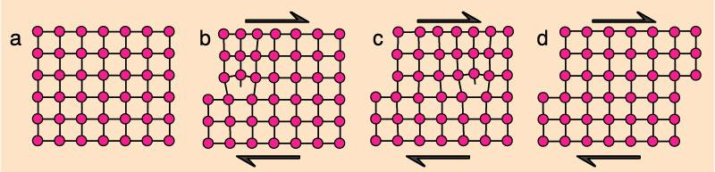
→ @undulose_extinction: the crystalographic orientation determines the extinction angles. When the lattice is reorientated, the extinction position changes.
→ @deformation_twinning: Twinning increases the amount of stress that the rock can handle, and occurs in high stress situations
Recrystalisation
@Dynamic_recrystallisation is the sum of deformation and recrystallisation:
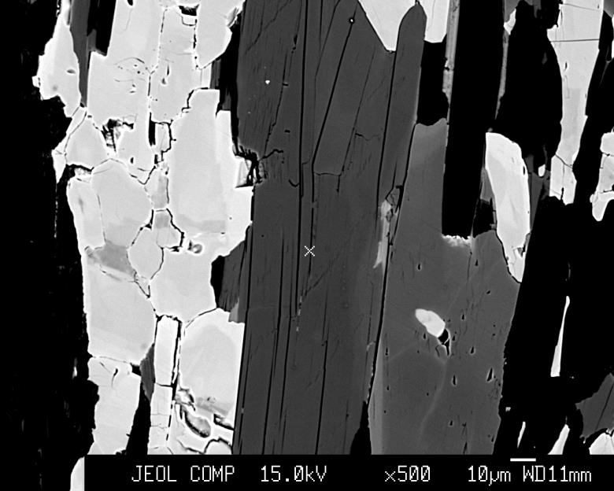
@Static_recrystalisation is recrytstalisation without any deformation
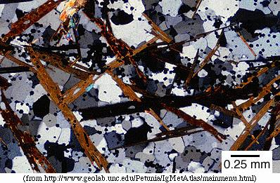
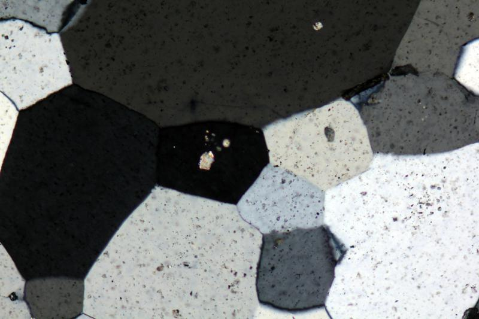
Other Textures
A @Poikiloblast is a @porphyroblast which still has some inclusions of the original rock in it, including reactants not completely consumed, → @skeletal_texture
A @depletion_halo is a ring depleted of chemicals needed for porphyroblasts to grow
@Nodular_texture
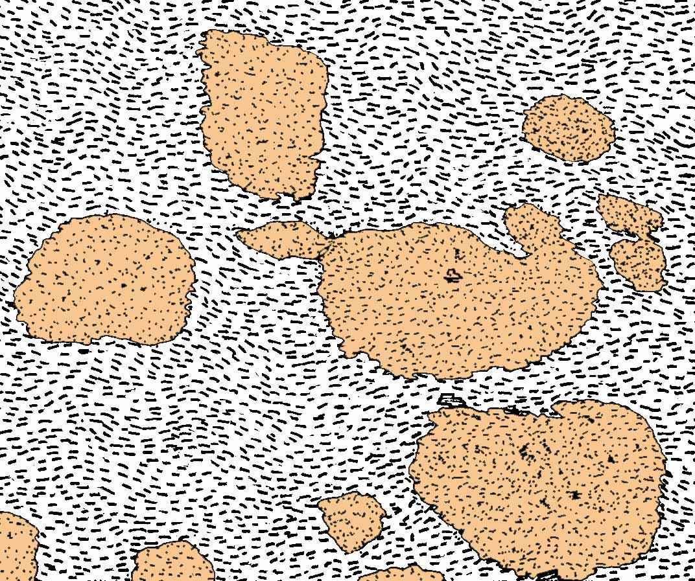
@Spotted_texture (very small porphyroblasts in a fine grained matrix)
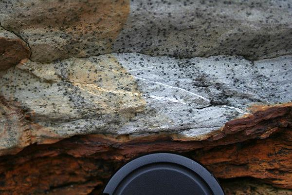
Crenulation Cleavage
@Crenulation_cleavage removes the quartz in the second foliation
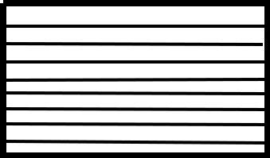→ → 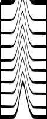
Rock Foliation Second foliation deformation deforms foliation
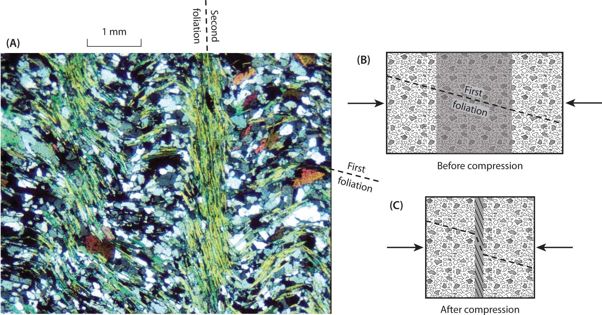
S-C Fabric
S= 'Schistosité' (french for scissors)
C= Cisaillement
The @S_fabric must be at 45° or less to the shear zone boundary
The @C_bands are at 90° to the shear zone boundary 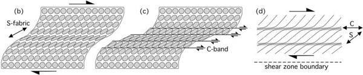
The mini shear bands (c bands) can be seen here as well as the shear zone boundary and the s fabric⬇️
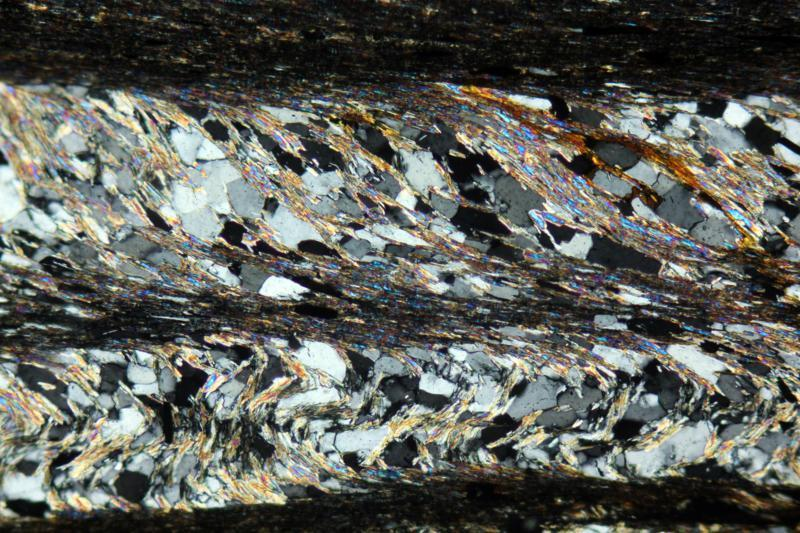
Metamorphic mineral growth during shear
Inclusions that were once parallel to the foliation can be rotated → @Helicitic_texture
@Snowball_garnets ⬇️
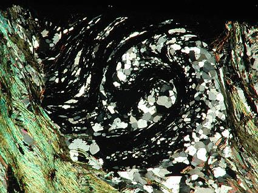
This can change the crystallographic orientation, mineral chemistry, and distribution of elements. These maps of @crystalographic_orientation show the different concentrations of manganese
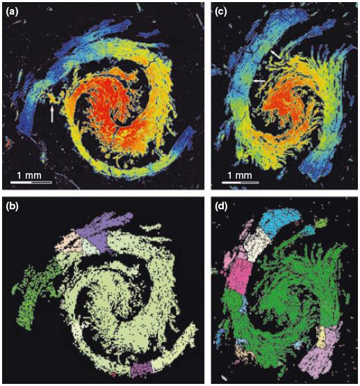
Clasts
These snowballs can either be @σ_clasts @δ_clasts or @Φ_clasts with a porphyroblast in the centre.
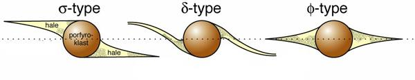
How a porphyroblast gets its tails:
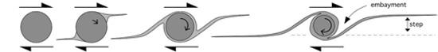